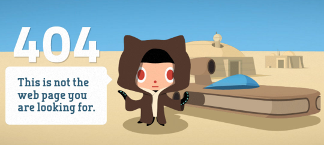

All About Github
- Q:What is the version control system?
- A:Git.
- Q:What is Git?
- A:Git is an open source distributed system.
- Q:What is GitHub?
- A:GitHub is an online software development platform. It's used for storing, tracking, and collaborating on software projects.
- Q:What is the difference between Git and Github?
- A:Git is a version control system that lets you manage and keep track of your source code history. GitHub is a cloud-based hosting service that lets you manage Git repositories.
- Q:Who started GitHub and how was it started?
- A:The company, GitHub, Inc., was formed in 2007 by Chris Wanstrath, P. J. Hyett, Tom Preston-Werner and Scott Chacon, and the GitHub.com service was rolled out in February 2008
- Q:What company owns it now?
- A:Microsoft Corp.
- Q:How much does a GitHub account cost?
- A:GitHub offers free and paid plans
- Q:What is the Octocat?
- A:Half-cat, half-octopus character that is placed on pages that do not exist or has a problem.

Git/Github terms:
- repository:A central location in which data is stored and managed.
- commit:Records changes to one or more files in your branch.
- fork:A new repository that shares code and visibility settings with the original “upstream” repository.
- push:How you transfer commits from your local repository to a remote repo.
- pull request:Lets you tell others about changes you've pushed to a branch in a repository on GitHub.
- workflows:A configurable automated process that will run one or more jobs.
- issues:Lets you track your work on GitHub, where development happens.
- raw button:You can view or copy the raw content of a file without any styling.
- blame button:Used to examine the contents of a file line by line and see when each line was last modified and who the author of the modifications was.
|